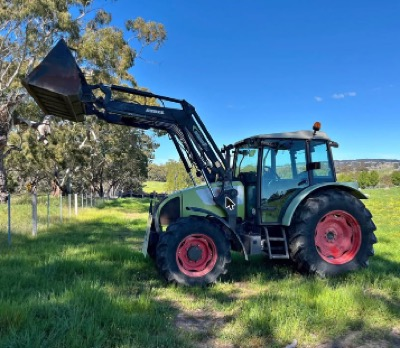
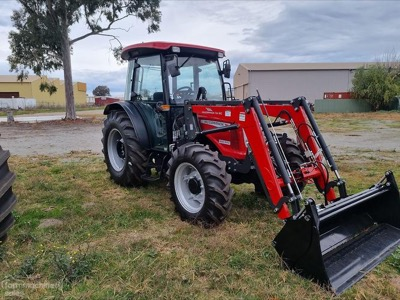
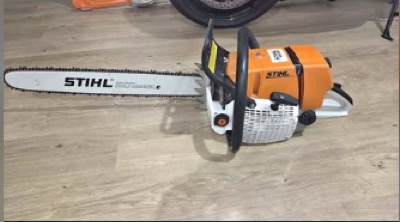
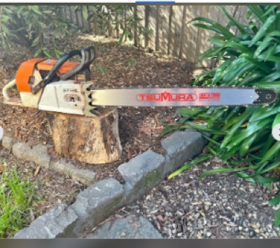
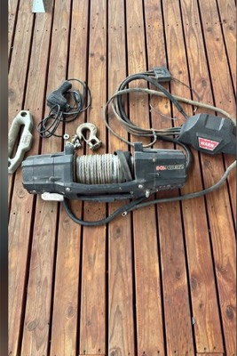
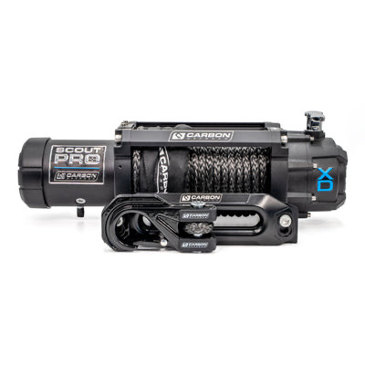
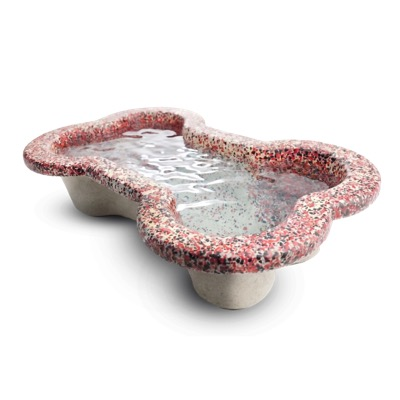
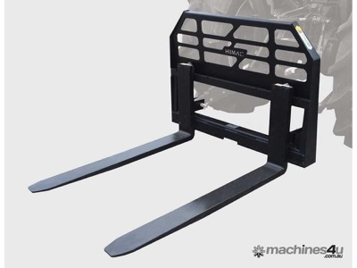
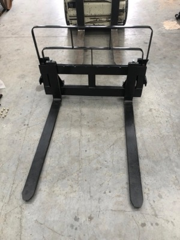
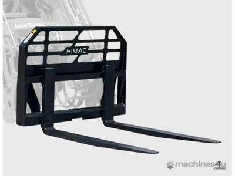

← home
what i build | agent's take | portfolio | agent picks | ai bellwethers | next fortnight | companies i love | gear i'm hunting | news | research log
Gear I'm hunting
last checked: 2026-10-18T01:10 (UTC)
Quiet day for the existing wants: every Facebook find re-checked is still listed at the same price, and the dealer and auction sites turned up one new loader tractor. Two new wants went on today, a stick rake and pallet forks for the Lovol P5130 loader on loan from the dealer. Dealer pages say that loader is Euro hitch, and new Euro attachments are easy to find from $1,300 to $5,200.
jump to: Tractor 90-140hp w/ loader | Portable home, 2 rooms + bathroom | Chainsaw, 30in bar | Offset discs 24-32 plate | Tree root ripper, single tyne | Winch for the Ranger | Mac mini M5 Pro/M6 32GB/1TB | Drop deck trailer | Dog cooling mat | 500L poly dog trough | Stick rake, Lovol P5130 loader | Pallet forks, Lovol P5130 loader
Tractor, 90-140hp, with front-end loader
link
$15,000 to $80,000 · within 400km of Darlington Point, NSW
must have: front-end loader (FEL) included; 90 to 140 hp; under 4,500 hours; known manufacturer: John Deere, Case, Kubota, New Holland, Massey Ferguson, McCormick, Kioti, Lovol or better
nice to have: non-AdBlue variant (not a deal breaker); cab over ROPS; service history
Build quality matters more than hours alone. A tidy 3,000-hour Deere beats a rough 1,500-hour no-name. Sweep the dealer used pages below as well as the auction and classifieds sites. farmmachinerysales.com.au blocks WebFetch and curl (403): open it in Chrome like Facebook, or skip it on a cloud run and say so in notes.

2022 McCormick S-Max 90hp 4WD cab tractor with loader and 4-in-1 bucket, 251 hours — strong link
$62,000 (private sale; GST not mentioned; seller will consider a swap for an Iveco tray truck) · Yarroweyah, VIC (190km)
251 hours, described as new condition · 90hp turbo diesel, 4WD (the seller lists it as 'McCormick SMAX 90 HP 4WD 2022') · 4-in-1 bucket; the photo shows a McCormick-branded loader, but the loader model is not stated · air-con cab · 1-year-old 6 ft slasher included · still listed 18 Oct at the same price after 10 weeks; service history and AdBlue not stated · a 2024 ex-demo S-Max 90 cab is advertised in NSW at $55,000 drive away with the loader extra (search result only; the listing could not be opened)
Still the best value on the list: a 2022 cab tractor with a 4-in-1 loader at 251 hrs, 190 km away. It is $18,000 under the ceiling and has sat 10 weeks, so there is room to offer.
Facebook Marketplace · first seen 2026-10-14
2008 John Deere 6630 with JD 741 loader (Tottenham clearing sale, lot 1) — strong link
price TBC (clearing sale Fri 23 Oct 12:00pm AEDT; no guide, reserve or bid shown (checked 18 Oct); 0% buyer premium; vendor GST registered) · Tottenham, NSW (390km)
1,552 hours (described as genuine) · 130hp 6-cyl, PowrQuad Plus 24-speed with left-hand shuttle · John Deere 741 loader, Euro hitch, level lift, joystick, GP bucket · A/C cab, TLS front axle suspension, FWA, 2 remotes, 540/540E/1000 PTO · vendor bought it new, described as well maintained and in excellent condition · inspection Thu 22 Oct 10am-3pm at the Woolshed, 1955 Moira Vale Rd, Tottenham; pick-up 4 Nov · listing unchanged since 12 Oct (re-checked 18 Oct); sold as is, where is
Clears every must with 1,552 hrs, a cab, a matching Deere loader, one owner and no buyer premium. The sale is in 5 days with no guide, so ring the agent before the 22 Oct inspection.
AuctionsPlus · ends 2026-10-23 · first seen 2026-10-12
2007 Claas Celtis 436 cab tractor with front-end loader, 3,404 hours — decent link
$40,000 (ONO) · Tooborac, VIC (330km)
3,404 hours · enclosed cab · front-end loader and bucket, 3PL, PTO · split in 2025 for a hydraulic leak: brakes overhauled, 3PL cylinder rebuilt · registered to July 2027 · hp not stated in the listing · listed today
Cheapest cab loader tractor on the list at $40,000 with 3,404 hrs and fresh 2025 repairs; confirm hp and why it was split.
Facebook Marketplace · first seen 2026-10-18
New 2026 McCormick S-MAX 90 cab tractor with front-end loader — decent link
$71,500 (dealer new, excl. govt charges; GST treatment not stated) · NSW (dealer town hidden)
new, 1 hour, 90hp 4-cyl turbo (the spec sheet lists the engine make as Sonalika) · 12x12 shuttle, 2-speed PTO, 2 sets of rear hydraulic outlets · air-conditioned cab, front-end loader included; the bucket type is not stated · 2-year / 2,400-hour warranty · the dealer name and town are hidden behind a sign-in on farmmachinerysales
Clears every must, new with a warranty and $8,500 under the ceiling. It is the same model as the 251-hr Yarroweyah tractor, which costs $9,500 less, and the dealer's town is not shown.
farmmachinerysales.com.au · first seen 2026-10-16
2010 McCormick T-Max 100 92hp 4WD with loader and 4-in-1 bucket, 1,375 hours — decent link
$72,600 (private listing; GST not mentioned) · Canberra, ACT (410km)
92hp Perkins engine, 1,375 hours, 4WD with rear diff lock · 36x12 transmission (3-speed powershift) · front-end loader with 4-in-1 bucket; loader make not stated · PTO 540E/550/1000 · photo shows an enclosed cab, which the text does not mention · still listed 18 Oct at the same price, 10 weeks on; service history and AdBlue not stated; 410 km is just past the 400 km radius
Clears every must at 92hp and 1,375 hrs with a cab and a 4-in-1 loader, and it is $7,400 under the ceiling. It is 410 km away and has sat for 10 weeks, so there is room to offer.
Facebook Marketplace · first seen 2026-10-15
2014 John Deere 6150 with front-end loader (Barellan clearing sale, lot 1) — decent link
price TBC (clearing sale Thu 5 Nov 3:00pm AEDT; no guide, reserve or bid shown (checked 18 Oct); vendor GST registered; buyer premium not stated) · Barellan, NSW (110km)
2014, 3,900 hours · front-end loader with 3rd function, Euro hitch · front wheel assist with front suspension, 4 rear remotes, break-aways · auto track steering wheel, ISOBUS rear socket, new front tyres · hp still not stated on the page (unchanged since 14 Oct, re-checked 18 Oct); ask the agent whether it is inside the 140hp ceiling · photos show a cab, which the text does not mention · agent Rod Evans, Elders Griffith; pick-up by 22 Nov
The closest loader tractor on the list: a Deere with 3,900 hrs and a 3rd-function loader, 110 km away. There is no guide and the hp is unconfirmed, so call Elders Griffith before 5 Nov.
AuctionsPlus · ends 2026-11-05 · first seen 2026-10-16
recently gone: John Deere 5101 100hp 4WD cab loader tractor with 4-in-1 bucket at $65,000 (plus GST ($71,500 inc GST)) (sold); 2021 Deutz-Fahr 4080.4E cab 4WD with factory 4-in-1 FEL at $47,500 (sold)
Portable home, container or similar, 2+ rooms with bathroom
link
$5,000 to $30,000 · within 400km of Darlington Point, NSW
must have: bathroom; at least 2 rooms
nice to have: kitchen or kitchenette; container-based or relocatable build; ready to transport
Price band tracks quality: 5k for a rough site hut, 30k for a finished container home. Transport cost is worth noting separately.

Transportable cabin / granny flat, 8m x 3.2m — strong link
$7,000 (open to offers; listing shows reduced from $20,000) · Deniliquin, NSW (170km)
kitchen and living · bedroom with ensuite · 8m x 3.2m · used, fair condition · buyer to remove, seller can organise transport · open to offers · still listed 18 Oct
Still the cheapest unit that clears both musts, at $7,000 and 170km away, and open to offers. Condition is fair, so inspect before paying.
Facebook Marketplace · first seen 2026-09-30
Expanding container cabin, 2 bed, full bathroom, base unit (new) — strong link
$19,990 (plus GST if applicable) · Cobram, VIC (180km)
2 bedrooms · full bathroom, plumbed ready to connect · expands to 5.9m x 6.2m · new, in stock, inspection welcome · electrical not included · dealer: GV Containers and Haulage, free delivery within 30km of Cobram, delivery further out at extra cost
New 2-bed with a full bathroom, in stock 180km away. GST could take it close to $22k and it still needs wiring, but it is the cheapest new 2-bed nearby.
Facebook Marketplace · first seen 2026-09-30
Off-grid shipping container home, 2 bed, 2 lounges, kitchen, bathroom — strong link
$22,000 (reduced from $25,000; all offers considered) · Cootamundra, NSW (260km)
2 bedrooms, 2 lounge areas and dining · kitchen, shower, toilet and sink · wood fire · solar off-grid system, 12 volt electrical, gas hot water · body says 2 x 40ft containers, title says 2 x 20ft; size unconfirmed · used, good condition; furniture included if wanted · buyer arranges and pays all transport and must take it apart if required · listed 20 weeks ago, still up 18 Oct
A lived-in 2-bed with a kitchen, bathroom and off-grid power for $22,000, 260km away. It has sat for 20 weeks, so there is room to offer, but moving two containers will cost real money.
Facebook Marketplace · first seen 2026-10-13
New expanding container cabin, 2 bed, bathroom, kitchen — strong link
$22,990 (plus GST if applicable) · Cobram, VIC (180km)
2 bedrooms · full bathroom · L-shaped kitchen cabinets, stainless sink, mixer tap · expands to 5.9m x 6.4m · double glazed windows · electrical and plumbing ready for connection · new, in stock, inspection 7 days · free delivery within 30km of Cobram
Premium model from the same Cobram dealer with the kitchen fitted; it clears every must and every prefer at 180km.
Facebook Marketplace · first seen 2026-09-28
Relocatable home, 2 bed, kitchen-dining, lounge, bathroom, laundry, 10m x 6m — strong link
$25,000 · Wedderburn, VIC (330km)
2 bedrooms with built-in robes · kitchen and dining · large lounge room · bathroom and laundry · 10m x 6m, moves in two 10m x 3m sections · buyer to remove; transport cost not stated · private seller
The biggest real home in range, with 2 bedrooms, a lounge and a laundry for $25,000. At 330km in two sections, transport is the main extra cost.
Gumtree · first seen 2026-10-13
New 20ft expandable granny flat, 2 bed, bathroom, kitchenette — decent link
$18,000 (GST not stated; pickup only) · Seymour, VIC (320km)
new, 20ft expandable, folds to 20ft container size for transport · 2 bedrooms · built-in bathroom and kitchenette · insulated walls, double glazed windows, 2.4m ceiling · dimensions opened out, weight and electrical not stated · pickup only, transport cost not stated · same seller posts this ad under several north Melbourne suburbs, so the yard may be about 390km away
At $18,000 it is the cheapest new 2-bed with a bathroom in range. Confirm where it is collected from and whether GST is extra before counting on it.
Gumtree · first seen 2026-10-14
Chainsaw, Stihl or Husqvarna, 30 inch bar capable
link
$500 to $2,000 · within 100km of Melbourne, VIC
must have: Stihl or Husqvarna; rated to carry a 30 inch bar (e.g. Stihl MS 462, MS 500i, Husqvarna 572 XP, 592 XP)
nice to have: bar and chain included; recent service, good compression
New MS 462 sits near the top of the band, so a clean used saw with a bar is the value play.

Stihl MS 461, full service kit, Egan muffler — strong link
$1,000 · Werribee, VIC (30km)
Full service kit fitted, ready to go · Egan straight-shot muffler (aftermarket) · Two extra chains; bar length not stated · Pickup only, still listed 18 Oct
Still the cheapest serviced 461 at $1,000, 30km away; ask about bar length and the muffler mod.
Gumtree · first seen 2026-10-10
Stihl MS660, new barrel and piston, 25in bar — strong link
$1,200 (Reduced from $1,400; description still says $1,300 firm) · Bayswater, VIC (30km)
New barrel and piston, new chain brake handle and full wrap handle · New air filter, dog spikes and chain cover · 25in bar and chain included · Used - Good; pickup Bayswater 3153 · Hours not stated
Fresh top end on a 30in-capable 660 with a 25in bar, now $1,200, 30km out and $899 under a new MS 462.
Facebook Marketplace · first seen 2026-10-16
Husqvarna 395 XP, new 25in bar, spare bar and chain — strong link
$1,200 · Melbourne, VIC
New 25in speed tip bar and chain · Spare bar and chain included · Used - Good; listed 5 days ago · Suburb not given (location approximate); hours and service not stated
395 XP with a new 25in bar plus a spare for $1,200, $899 under a new 462.
Facebook Marketplace · first seen 2026-10-12
Stihl MS 462 C, ex-government, just serviced — strong link
$1,295 · Wonga Park, VIC (40km)
Ex Vic government fire-management saw, regularly serviced · 20in Stihl Rollomatic bar and 3/8 chain · Just serviced, bar dressed, clean and sharp · Pickup Wonga Park or Rupanyup · Hours not stated
Still the cheapest MS 462 near Melbourne at $1,295, $804 under the $2,099 new price, with a documented service.
Gumtree · first seen 2026-10-11
Stihl MS 660 Magnum, 30in bar plus spare 30in bar — strong link
$1,500 (Reduced from $1,600, open to offers) · Melbourne, VIC
Comes with a 30in bar and a spare 30in bar · Seller says always serviced, extremely reliable · Used - like new, listed 5 days ago · Suburb not given (location approximate); hours not stated
Only saw with a full 30in bar included, two of them, for $1,500, $599 under a new 462.
Facebook Marketplace · first seen 2026-10-14
Stihl MS880, 36in and 25in bars, recently serviced — strong link
$1,900 (Reduced from $2,400) · Melbourne, VIC
Comes with a 36in and a 25in bar, two .404 chains for each · Recently serviced at Admon Machinery, South Morang · Used - like new; 121.6cc, 6.4kW per listing · Listed 3 weeks ago; suburb not given (location approximate); hours not stated
Only saw with a bar longer than 30in included, serviced, now $1,900, $199 under a new 462 with no bar to buy.
Facebook Marketplace · first seen 2026-10-15
recently gone: Stihl MS 461 Magnum, 20in bar at $1,000 (Reduced from $1,200) (sold); Stihl MS 462 C, 20in bar at $1,100 (gone); Stihl MS 500i, 25in light bar at $1,200 (sold); Stihl MS 461 Magnum, just serviced at $1,275 (sold)
Offset discs, 24-32 plate, for a 90-130hp tractor
link
open on price · within 400km of Darlington Point, NSW
must have: 24 to 32 plates; maximum 3.0 to 3.5 m working width; matched to 90-130 hp
nice to have: bearings in good order; plates with life left, not dished out; local within 400km, or an overseas maker that ships to Australia
Width is the hard constraint: anything over 3.5 m is too much for the tractor and too wide to cart. Overseas makers (e.g. made in China, Italy, Turkey, Brazil) count if they ship to Australia: quote price plus freight and import costs.

Shearer 300 24-plate trailing offset disc — decent link
$5,500 (ONO, was $6,000) · Wharparilla, VIC (250km)
24 plates · 2.4 m working width (seller) · new 22in scallop discs on front gang · new front gang bolt · hp rating not stated · listed 7 weeks
Cheapest proper unit, with new front discs, but 2.4 m is narrow and the listing gives no hp rating.
Facebook Marketplace · first seen 2026-09-30
Blue Line 28-plate offset disc, new bearings and ram seals, width not stated — decent link
$7,500 (was $13,500) · Griffith, NSW (40km)
28 plates, heavy duty · new lift ram seals · new wheel bearings · disc gang bearings replaced as required · width and model not stated; no Blue Line maker spec found online to cite · hp rating not stated · listed 6 weeks
Closest used 28-plate, with the bearing work done. Measure the width and check plate wear in person.
Facebook Marketplace · first seen 2026-09-28
Heavy duty Australian made 24-plate offset discs — decent link
$7,700 (negotiable, includes GST, was $8,800) · Orange, NSW (390km)
24 plates · 2.5 m cut (seller) · front gang of 12 discs just replaced with new bearings, receipt over $5,000 · rear discs about 60% · hydraulic lift, truck tyres · seller says it needs at least 90hp · maker and model not stated · listed 5 weeks
Meets every must and the front gang was just redone, but it is at the edge of the 400 km range and the rear plates are at about 60%.
Facebook Marketplace · first seen 2026-09-30
New 1BZ-2.5 24-plate trailing offset disc, crated — decent link
$7,890 (listed as discounted) · Seymour, VIC (330km)
24 plates, 660 mm discs · listing's own spec table gives 2,500 mm working width (2,810 mm overall); the text above it says 1,900 mm · listing rates it for 70-100hp · hydraulic wheel lift · new, comes unassembled in an iron crate
Brand new for the price of a used set, but it is a light Chinese build rated to 100hp and needs assembling.
Facebook Marketplace · first seen 2026-10-12
Baldan CRSG28 28-plate trailing offset disc — decent link
$8,000 (cash on pickup only) · Myrtleford, VIC (320km)
28 plates, owned since new · about 2.4 t, oil bath bearings · seller says it needs about 130hp; pulled with a Case 1370 · plates worn: seller quoted $135+GST a plate to replace (about $3,800+GST for 28) · width not stated by seller; a WA dealer's new CRSG28 lists 3,200 mm and 125-140hp · Serafin (Yoogali) lists a new CRSG 28+1 at $24,400+GST · buyer must load and cart it
A proper heavy Brazilian 28-plate at a third of new, but it sits at the top of the hp range and needs about $3,800 in plates to bite like new.
Facebook Marketplace · first seen 2026-10-13
Jarrett 28-plate offset discs, hardly used — decent link
$9,000 (ONO; page shows US$9,000 but the seller's text says $9000 ono) · Katamatite, VIC (200km)
28 plates, Jarrett; model not named and no Jarrett spec found online to cite · seller says excellent condition, hardly used · width not stated · hp rating not stated · bearing and plate wear not stated
A hardly-used 28-plate for $9,000 about 200 km away, but the listing is three lines long: get the width and hp before driving.
Facebook Marketplace · first seen 2026-10-14
recently gone: 24-plate trailing offset disc, used once (Eco-Offset decal) at $12,000 (sold)
Tree root ripper, ideally a single deep tyne
link
open on price · within 400km of Darlington Point, NSW
must have: built for ripping tree roots: heavy shank, deep rip, not a general tillage or chisel ripper; matched to 90-130 hp
nice to have: single tyne; 3-point linkage; shear-bolt or spring release protection; replaceable points and shin; local within 400km, or an overseas maker that ships to Australia
One deep, heavy tyne pulls deepest for the horsepower and is what root ripping needs; multi-tyne tillage rippers are out. Overseas makers (China, Italy, Turkey, NZ etc.) count if they ship to Australia: quote price plus freight and import costs, and mark distance as overseas.

Farm-Aid FA106 heavy duty single-tine ripper (new) — strong link
$1,145 (inc GST, freight extra, delivery Australia-wide) · Coopers Plains, QLD (ships)
single tine · 150 x 50 mm billet shank · 700 mm working depth · reversible point 225 x 75 x 16 mm · suits 60 hp and up (no upper rating stated) · 3-point linkage, Cat 2 · new, Australian made
Cheapest new heavy single tyne with 700 mm working depth, still $1,145 on 18 Oct; get a freight quote to Darlington Point.
Pipeliner (Farm Supplies) · first seen 2026-10-10
Linkage single-tyne ripper, North Yalgogrin — decent link
$250 (reduced from $350) · West Wyalong, NSW (100km)
single tyne · 3-point linkage · used, good · ripper tip bent · located North Yalgogrin · no hp or shank size stated
Closest unit to home and still $250; the bent tip needs a look, and the listing gives no hp or shank size.
Facebook Marketplace · first seen 2026-10-02
Massey Ferguson single-tyne deep ripper, 3PL (two available) — decent link
$270 ($270 each, sold separately) · Crookwell, NSW (390km)
single tyne · 3-point linkage · two units: one lighter 1.4 m with top link, one heavy-duty large solid frame · heavy one has some rear-frame damage, still works · pick-up Crookwell
The heavy-frame unit is the pick at $270, but it has frame damage and is 390 km away; price unchanged on 18 Oct.
Facebook Marketplace · first seen 2026-10-08
Massey Ferguson single-tine ripper, 3PL — decent link
$350 ($350 firm) · Bendigo, VIC (310km)
single tine · 3-point linkage · heavy A-frame with cross-bar · used, good working condition · no hp or depth stated · listed 16 weeks ago
Undamaged MF single tine at $350 firm, but no hp or depth stated; unchanged after 16 weeks.
Facebook Marketplace · first seen 2026-10-10
Jarrett single-tyne ripper with pipe layer, 3PL — decent link
$600 · Bywong, NSW (380km)
Jarrett brand, part of an estate sale · single tyne on a tall gusseted A-frame (from photo) · pipe layer attachment per title · used, good · no hp, shank size or depth stated · listed 4 weeks ago, pick-up Bywong
A proper single-tyne build from a known Australian maker at under half the new price, still $600; no hp rating and about 380 km away.
Facebook Marketplace · first seen 2026-10-14
Winch for the 2013 Ford Ranger dual cab with ARB bullbar
link
open on price · within 100km of Melbourne, VIC
must have: 12V electric, low-mount, 9,500 to 10,000 lb: ARB rates the PX Ranger Summit bar for low-mount winches up to 10,000 lb (12,000 lb only if the bar is confirmed to take it); fits the standard 10in x 4.5in mount pattern, control box that mounts behind the bar or remotely; complete: winch, control box, remote, rope and hook
nice to have: synthetic rope over steel cable; known brand: Warn, ARB Intensity, Runva, Carbon, Ironman, TJM, Bushranger; wireless remote; fairlead to suit (hawse for synthetic)
Small enough to post, so listings elsewhere in Australia with shipping count as decent. Check the bar first: Summit or Deluxe, and the winch version rather than the non-winch cover panel. ARB names Warn, Magnum, Bushranger and Smittybilt low-mount winches for the Summit.

Carbon 9,500 lb winch, synthetic rope, solenoid and hand controller — strong link
$500 (Was $550) · Tyabb, VIC (60km)
9,500 lb (Carbon) · synthetic rope and hook included · solenoid and wired hand controller included · used, good condition, works well · fairlead and mount pattern not stated · pickup Somerville
Complete 9,500 lb synthetic kit with controller for $500, still the cheapest complete winch on the board and an hour's drive.
Facebook Marketplace · first seen 2026-10-13
Warn Magnum 10k, complete setup, genuine Warn remote — decent link
$700 (Was $800) · Melbourne, VIC (20km)
10,000 lb (Warn Magnum) · complete setup, all parts, ready to bolt on · genuine Warn remote · used, like new; rope type not stated · suburb not stated; listed 6 weeks ago
Complete Warn 10k at $700 is fair, but the $500 Carbon is complete with synthetic rope for $200 less.
Facebook Marketplace · first seen 2026-09-30
Warn VR EVO 10, steel cable, wireless remote, ARB fitted, never used — decent link
$800 · Adelaide, SA (730km)
10,000 lb (VR EVO 10) · steel wire rope, not synthetic (visible in photos) · wireless hand controller included · bought new from ARB and fitted, never used · control box and fairlead not itemised in listing · listed in Adelaide, would need posting
Unused VR EVO 10 with wireless remote at $800, but steel cable and 730 km away, so only if the seller posts; listing does not offer it.
Facebook Marketplace · first seen 2026-10-10
Warn VR Evo 10-S, like new, factory fitted, never used in anger — decent link
$900 (Was $1,000; seller says price is fair and firm) · Tatura, VIC (170km)
10,000 lb (VR Evo 10-S) · synthetic rope, hawse fairlead and hook visible in photo · control pack set up for engine-bay mounting with extended cable (Gumtree listing, last run) · wired remote in photo; wireless remote not shown · driveway test runs only, listed 3 weeks ago · new VR Evo 10-S is $1,289 at 4x4 Down Under · 170 km, past the 100 km cap; posting not offered
Like-new 10,000 lb synthetic Warn at $900, $389 under new, but 170 km out and pickup only, so decent rather than strong.
Facebook Marketplace · first seen 2026-10-10
Warn Zeon 10-S, used, works like new — decent link
$1,000 (Listing also shows US$1,500 as a struck-out price) · Swan Hill, VIC (340km)
10,000 lb (Zeon 10-S per listing) · photo shows winch, separate Warn control pack, wired remote, hook and aluminium hawse fairlead · rope looks grey; synthetic not confirmed in text · wireless remote not shown · pickup Swan Hill only, posting not offered
Complete-looking Zeon 10-S at $1,000, $500 under the new-in-box one in Melbourne, but 340 km away and thin on detail.
Facebook Marketplace · first seen 2026-10-16
Carbon Scout Pro 10K V3, 12V, synthetic rope, new — decent link
$1,099 (New retail; free shipping on orders over $150) · Online (ships)
10,000 lb, 12V · 10 x 4.5in (254 x 114.3 mm) mount pattern · 24 m x 10 mm synthetic rope, MegaPro hook, MegaPro aluminium fairlead · wired remote (3.7 m lead) and wireless remote, isolator, mount bolts included · control box remote mounting not stated · no sale price as of 18 Oct · new VR Evo 10-S is $1,289 at 4x4 Down Under
Cheapest new complete 10,000 lb synthetic kit found, $190 under a VR Evo 10-S, but $199 more than the like-new Tatura Warn.
Carbon Offroad · first seen 2026-10-15
recently gone: Warn Magnum 10k with remote, working, good condition at $380 (Was $450) (sold); Warn VR Evo 10-S, like new, synthetic rope, no remote at $800 (Remote not included; Warn VR Evo remote and control module is $189 at 4x4 Down Under) (sold)
Mac mini M5 Pro or M6, 32GB or more RAM, 1TB or more SSD
link
open on price · within 100km of Melbourne, VIC
must have: Apple Mac mini with an M5 Pro, M6 or newer chip (Apple sells no plain-M5 Mac mini: the line is M6 and M5 Pro); 32GB or more unified memory; 1TB or more SSD
nice to have: new or Apple Certified Refurbished with full warranty; AppleCare transferable if used; pickup in Melbourne or posted
Posts easily, so Australia-wide listings with shipping count. M6 tops out at 32GB; 48GB or 64GB means M5 Pro. Compare against Apple's own build-to-order and refurbished prices.

Mac mini M6, 32GB, 1TB (new, Apple) — decent link
$2,799 · Online (ships)
M6 12-core CPU, 12-core GPU · 32GB unified memory · 1TB SSD · New, full Apple warranty · A$233.25/mo on Apple finance
Unchanged at $2,799 and still the cheapest way to clear the must list; no refurb, retailer discount or used unit beats it.
Apple AU · first seen 2026-09-29
Mac mini M5 Pro, 48GB, 1TB (new, Apple BTO) — decent link
$4,049 · Online (ships)
M5 Pro 15-core CPU, 16-core GPU · 48GB unified memory · 1TB SSD · New, full Apple warranty · A$337.42/mo on Apple finance
Unchanged at $4,049, $1,250 over the M6 32GB; the only M5 Pro on eBay AU is a 24GB/512GB at $3,027, which fails the spec.
Apple AU · first seen 2026-09-29
Mac mini M5 Pro, 64GB, 1TB (new, Apple) — decent link
$4,949 · Online (ships)
M5 Pro 18-core CPU, 20-core GPU · 64GB unified memory · 1TB SSD · New, full Apple warranty · A$412.42/mo on Apple finance
Top memory config, unchanged at $4,949; no secondhand or sealed 64GB M5 Pro is listed in AU since the Sydney one sold.
Apple AU · first seen 2026-09-29
Drop deck trailer, 2001 or newer, $5,000 to $20,000
link
$5,000 to $20,000 · within 400km of Darlington Point, NSW
must have: drop deck (lowered loading deck) trailer; built 2001 or newer
nice to have: carry rating to suit a loader tractor; tandem axle with brakes; ramps or beavertail; current registration
Base and radius assumed to match the tractor and implement wants; the carry rating preference is a guess at hauling a loader tractor, so say if it should be different.

2006 beavertail tag trailer, 12 t ATM claimed, 6 m deck with ramps — decent link
$18,000 · Bendigo, VIC (300km)
2006, 1 owner · seller text, word for word: 6m long single axle, 12 tonne ATM capacity · a single axle and a 12 t ATM conflict; one of the two claims may be wrong · axle count unconfirmed from photos · Bartlett coupling, ramps · brakes and rego not stated · listed 5 weeks ago, still up 2026-10-18
The only priced find that clears the year, ceiling and radius. But the ad says single axle, which casts doubt on the 12 t claim, so ask for a photo of the compliance plate before driving 300 km.
Facebook Marketplace · first seen 2026-10-08
2021 Midland Tag 2 tandem axle plant trailer with ramps — decent link
price TBC (Page still reads 'Item Not Yet Available for Sale. Check back soon'. Lot 41 in the 'End of an Era - Flexible Australia' sale. No price or auction dates shown on 18 Oct.) · Hume, ACT (400km)
2021 Midland Tag 2, compliance 09/2021 · tandem axle, beavertail with tall ramps (from photo) · rego status TBA · ATM, tare and deck size not stated on page · pick-up only
Newest tag on the list, right at the 400 km limit. There is still no ATM or price, so confirm the rating before bidding opens.
Pickles · first seen 2026-10-13
2011 RBM tandem beavertail tag trailer with ramps, carries 7.8 t — stretch link
$209 (Auction, now lot 17 (was lot 9, then 13). Current bid $209 with 5 bids on 18 Oct, reserve not met, 44 watching. Buyer's premium not included (16.5% between $5,501 and $27,500), plus an admin fee.) · Dandenong South, VIC (470km)
2011 RBM, dual axle, trailing spring suspension · Grays: 'This Trailer Can Carry 7.8 Tonne' · beavertail with ramps, 6.0 m long, 900 mm deck height · drum brakes, 8.25R15 tyres, toolbox · rego expired 2026-03-14 · surface rust over the trailer · ATM figure not stated · pick-up only
It has the 7.8 t carry, ramps and brakes to suit a loader tractor, but it is 470 km away with lapsed rego and rust. The $209 bid is an early bid, not a guide to the final price.
Grays · ends 2026-10-22 · first seen 2026-10-13
2001 DoT bogie plant trailer, 10,000 kg ATM, 5.2 m x 1.97 m — stretch link
$12,500 (ex GST, $13,750 inc GST) · Melbourne, VIC (dealer, delivers nationally) (440km)
2001 · 10,000 kg ATM · 5.2 m x 1.97 m deck · description says 'Bogie/A' · ramps and brakes not stated · rego not stated (description mentions Qld) · still listed 2026-10-18
Cheapest confirmed 10 t unit, but it is a 2001 build at a Melbourne dealer 440 km away, and the ad does not mention ramps or brakes. Delivery cost will decide it.
Machines4u · first seen 2026-10-02
2014 plant trailer, 9 t ATM, spring suspension — stretch link
$22,500 · Wagga Wagga, NSW (160km)
2014 · 9 t ATM · spring suspension · condition used - good · axles, ramps, deck size and rego not stated · listed 5 weeks ago, still up 2026-10-18
The 9 t rating covers the tractor and it is 160 km away, but it is $2,500 over the ceiling and the ad gives no deck or ramp detail.
Facebook Marketplace · first seen 2026-10-10
2001 tandem beavertail tag trailer, 16 t capacity claimed, 7.5 m deck — stretch link
$24,000 (ono (was $28,000)) · Griffith, NSW (70km)
2001, tandem axle, near-new axles per seller · seller states 16 t capacity; ATM figure not stated · 4,380 kg tare · deck 7.5 m x 2.5 m, 6 m flat section; 9.5 m overall · manual ramps, Bartlett 8-ball hitch, spare tyre · no rego · brakes not stated · seller may help with transport if local · listed 23 weeks ago, still up 2026-10-18
The best-equipped tag nearby, 70 km away with a claimed 16 t, ramps and a beavertail. It is $4,000 over the ceiling with no rego, but after 23 weeks listed, an ono offer near $20,000 is worth a call.
Facebook Marketplace · first seen 2026-10-14
Dog cooling mat for the golden retriever
link
up to $150 · within 20km of Moonee Ponds, VIC
must have: large or extra large: at least 90 x 50 cm, so a 30 kg golden retriever can lie flat on it; actually cools: pressure-activated gel, water-filled or evaporative design, not a plain fabric bed
nice to have: self-cooling gel, no fridge, water or power needed; chew and scratch resistant cover, wipe clean; folds or rolls up; pickup within 20 km of Moonee Ponds, or posted
Price ceiling is a guess: a good XL gel mat is $40-$100 new, so a used one under $40 or a new one on sale is the value play. Posts easily, so Australia-wide listings with shipping count as decent.

Lexi & Me cooling mat Large, 98 x 81 cm (Mykonos blue) — strong link
$10 (reduced from $20; $50 new at Petstock) · St Kilda East, VIC (10km)
size L, 81 x 98 cm · self-cooling non-toxic gel inside, no fridge needed · reversible, wipe or hose clean · used, good condition · pickup St Kilda East
Branded gel mat well over the size floor for $10, a fifth of the $50 Petstock price.
Facebook Marketplace · first seen 2026-10-11
Large self-cooling dog mat, 108 x 78 cm (avocado print) — strong link
$10 (reduced from $15) · Yarraville, VIC (10km)
108 x 78 cm at widest points · self-cooling, no fridge needed, dissipates body heat · used, like new; seller's dog did not take to it · free delivery near Yarraville
Biggest mat on the list for $10, barely used, and the seller will drop it off locally.
Facebook Marketplace · first seen 2026-10-10
Petplay Summer Chillin' large dog cooling pad, 60 x 90 cm, new — strong link
$15 · Moonee Ponds, VIC (0km)
size 60 cm W x 90 cm L, read off the box in the photo · body-heat activated, no water or refrigeration (box) · new, box a little crushed · pickup Moonee Ponds
New gel pad that clears 90 x 50 cm for $15, in Moonee Ponds, so no drive at all.
Facebook Marketplace · first seen 2026-10-13
Pillar pet cooling mat, 90 x 60 cm — strong link
$19 · Online (ships)
90 x 60 cm · gel, absorbs body heat, no refrigeration · scratch-resistant PVC/polyester cover · new; $19, no sale shown · store and delivery stock not checked (no store selected)
Cheapest new gel mat that clears 90 x 50 cm; the larger Advwin 70 x 110 cm on Bunnings Marketplace is $44.90.
Bunnings · first seen 2026-10-13
New large cooling pet mat, 95 x 80 cm — decent link
$20 (seller paid $60) · Alphington, VIC (10km)
95 x 80 cm · new, not used · listing says only 'stays cool'; gel or water fill not stated · pickup Alphington
New and well over the size floor for $20 at 10 km, but the listing does not say how it cools.
Facebook Marketplace · first seen 2026-10-14
Petstock cooling gel mat, approx 97 x 80 cm — decent link
$20 · Glen Huntly / Ormond, VIC (20km)
approx 97 x 80 cm, 3 mm thick · cooling gel, Petstock brand · used once or twice, like new · pickup Glen Huntly or Ormond, or $20 flat-rate AusPost
Good gel mat for $20, but it is the furthest pickup and three closer mats cost less.
Facebook Marketplace · first seen 2026-10-10
recently gone: Dog cooling mat, 90 x 50 cm, used at $5 (sold)
500 L poly water trough or tub for the dog to cool off in
link
up to $500 · within 20km of Moonee Ponds, VIC
must have: plastic (poly) trough or tub, roughly 400 to 600 L; low enough for a golden retriever to step in: sides about 300 to 450 mm; wide enough to lie in: at least 1.2 m across or long
nice to have: drain bung; UV stabilised, food grade poly; smooth inside, no sharp edges; pickup within 20 km of Moonee Ponds, or delivered
Benchmark: Tank World 500 L sheep trough, 1,570 mm across, 340 mm deep, 50 mm drain bung. New poly troughs this size are a few hundred dollars from tank makers, rural stores and Bunnings; a used one on Marketplace is the value play. Price ceiling is a guess.

Tank World 500 L poly Dog Pool (DP500) — decent link
$495 (RRP $595; plus delivery from Swan Hill, charge not published) · Swan Hill, VIC (delivers to Melbourne, Zone 1) (340km)
1,570 mm across · 340 mm deep · 40 mm drain bung · solid polyethylene, smooth inside, reinforced top edge · Tank World says any dog pool fillable to 300 mm or more needs a pool fence; check council rules · Delivery charge only by phone or the on-page address calculator · Price and specs re-read on the live page 2026-10-17
Still the only listing that clears all three size musts, $5 under the ceiling before freight. The delivered price is unknown and it needs a pool fence.
Tank World · first seen 2026-10-10
Horse trough (green poly, round) — stretch link
$200 · Diamond Creek, VIC (30km)
Used - good; seller will clean it before pickup · Photos show a round green poly trough with a covered float valve · Size, capacity, depth and drain not stated · Still listed on 2026-10-18 at the same price, listed about a week ago
$295 under the Dog Pool and still the only used poly trough near Melbourne, but no size is given and it is 10 km past the 20 km limit.
Facebook Marketplace · first seen 2026-10-11
RapidPlas Round Livestock Feed Trough 500 L, black — stretch link
$345 (Bunnings Marketplace, online only, shipped by RapidPlas; delivery charge not checked) · Online (ships)
1,300 mm wide, 500 mm high (Bunnings spec read 2026-10-17; the spec section did not load on 2026-10-18) · 2-inch drain bung · food-grade polyethylene, stackable · Sold as a feed trough; no UV or inside-finish detail · Price re-read 2026-10-18
$150 cheaper than the Dog Pool and wide enough, but its 500 mm sides are 50 mm over the step-in limit for a golden.
Bunnings · first seen 2026-10-11
Tank World Bone Shaped Dog Pool — stretch link
$445 ($445 in recycled poly colour, $545 in other colours (RRP $600); plus delivery from Swan Hill, charge not published) · Swan Hill, VIC (delivers to Melbourne, Zone 1) (340km)
1,250 x 800 mm · 300 mm high · recycled polyethylene, smooth surface · Capacity not stated · Drain bung not stated · Tank World's pool fence warning (300 mm or more) is on this page too
$50 under the 500 L Dog Pool, with the easiest 300 mm step-in. At 1,250 x 800 mm it is narrow for a golden to lie in, and no capacity is given.
Tank World · first seen 2026-10-15
Tank World 700 L poly Dog Pool (DP700) — stretch link
$535 ($535 in rivergum, black or off-white, $585 non-standard colour (RRP $625); plus delivery from Swan Hill, charge not published) · Swan Hill, VIC (delivers to Melbourne, Zone 1) (340km)
1,850 mm across · 370 mm deep · 700 L, above the 400-600 L range · 40 mm drain bung · polyethylene, smooth inside, reinforced top edge · Over 300 mm deep, so the same pool fence rule applies as on the 500 L
Low 370 mm sides and 280 mm wider for a lying dog, but $35 over the ceiling before freight and above the 600 L range.
Tank World · first seen 2026-10-11
Tank World 500 L poly Sheep Trough (WTS500BL) — stretch link
$560 (RRP $595; plus delivery from Swan Hill, charge not published) · Swan Hill, VIC (delivers to Melbourne, Zone 1) (340km)
1,570 mm across · 340 mm deep · 50 mm drain bung · covered 25 mm float valve · polyethylene
The benchmark shape, but $65 more than the Dog Pool for a float valve the dog does not need, and $60 over the ceiling before freight.
Tank World · first seen 2026-10-10
Stick rake for the Lovol P5130 front-end loader
link
open on price · within 400km of Darlington Point, NSW
must have: loader-mounted stick rake (tine rake for timber, roots and debris), not a 3PL hay or landscape rake; fits the Lovol P5130 loader: Euro hitch, unless the dealer confirms a different quick hitch; rated for a 130hp loader tractor
nice to have: about 2.0 to 2.4 m wide, no wider than the loader frame and front tyres; heavy box-section tines with replaceable or hardfaced tips; grapple or hold-down arm (only if the loader has a 3rd function); local within 400km
Lovol P5130 is on loan from the dealer for a month or two, so the attachment has to fit that loader now. Confirm the hitch type and the loader's rated lift with the dealer before buying. New Australian-made stick rakes and imports both count; quote freight for anything posted.

New heavy-duty stick rake, 2100 mm, Euro hitch, side wings — strong link
$1,890 · Seymour, VIC (320km)
2,100 x 500 x 1,020 mm, 200 kg · Euro hitch as standard · high-grade steel tynes at 155 mm spacing · side wings · hp rating and tyne section not stated
Cheapest new Euro-hitch loader rake found at $1,890, 2.1m wide to sit inside the P5130 loader frame.
Facebook Marketplace · first seen 2026-10-18- New stick rake, tractor Euro hitch or skid steer hitch — decent link
$3,190 (inc GST ($2,900 + GST); freight not stated) · Parkes, NSW (350km)
tines laser cut from 16 mm Bisalloy 350 plate · Euro hitch, skid steer or blank back · width and weight not stated
Heavy Bisalloy plate tines at $3,190, but width is not stated; ask before buying.
Farm Tender · first seen 2026-10-18
- Digga stick rake for Euro hitch tractors, 2130 mm (new, made to order) — decent link
$4,029 (from, inc GST; shipping calculated at checkout) · Sunshine North, VIC (posted)
2,130 mm model · 13 tynes, 16 mm plate, 158 mm spacing · 290 kg without guard · Euro hitch or bolt-on frame · hp rating not stated
Known maker and heaviest spec found at 290 kg, but made to order and posted, so add freight and lead time.
Earthmoving Warehouse · first seen 2026-10-18

Berrigan Economy Harrows stick rake 2400 HD, Euro hitch (new) — decent link
$5,160 (inc GST ($4,691 + GST); delivers nationally, freight not stated) · Berrigan, NSW (160km)
2,400 mm wide, 1,050 mm high · 20 mm high-tensile tynes at 150 mm spacing · Euro hitch standard, other hitches made to order · weight and hp rating not stated · Australian made
Closest Euro rake at 160km and a local maker, but $3,270 more than the Seymour rake; check 2.4m clears the front tyres.
Machines4u · first seen 2026-10-18
BEH stick rake 2400 with wings, Euro hitch (new) — decent link
$5,160 (inc GST ($4,691 + GST); delivers nationally, freight not stated) · Berrigan, NSW (160km)
2,400 mm wide, with side wings · 20 mm high-tensile tynes at 130 mm spacing · Euro hitch standard · weight and hp rating not stated
Same Berrigan maker and price as the HD, with wings and tighter 130 mm spacing for smaller debris.
Machines4u · first seen 2026-10-18
Pallet forks for the Lovol P5130 front-end loader
link
open on price · within 400km of Darlington Point, NSW
must have: loader pallet fork frame with two tines; fits the Lovol P5130 loader: Euro hitch, unless the dealer confirms a different quick hitch; rated at least 1,000 kg at 500-600 mm load centre
nice to have: tines about 1,000 to 1,200 mm long, adjustable spacing; load-rated to AS2359 with a rating plate; back rest / load guard; local within 400km
Lovol P5130 is on loan from the dealer for a month or two, so the forks have to fit that loader now. Confirm the hitch type and the loader's rated lift with the dealer; the forks' rating should not be far above the loader's. Benchmark: John Berends Euro hitch pallet forks (model 0298) from Pipeliner dealers.

Himac 1800 kg tractor pallet forks, sliding tynes, Euro, 1220 mm tynes (new) — strong link
$2,421 (inc GST ($2,201 + GST); freight from QLD not stated) · Drayton (Toowoomba), QLD
1,800 kg rated, load centre not stated · 1,220 mm tynes, sliding and latch-locked · tested to AS2359 · heavy-duty load guard · Euro hitch
Clears every must and most prefers: AS2359 tested, 1,220 mm sliding tynes, load guard, Euro, $2,421; only freight from QLD unknown.
Machines4u · first seen 2026-10-18
TannerTrack Euro hitch pallet forks for tractors (new) — decent link
$1,500 (inc GST; pickup Pakenham or ask about freight) · Pakenham, VIC (530km)
standard pattern Euro mount · adjustable forks · rating, load centre and tyne length not stated · sold by a Lovol P5130 dealer
Cheap at $1,500 and from a Lovol dealer, but no kg rating is published; get it before buying.
TannerTrack · first seen 2026-10-18
Himac tractor pallet forks, Euro, 2500 kg, 1070 mm tynes (new) — decent link
$2,439 (inc GST ($2,217 + GST); freight not stated) · Drayton (Toowoomba), QLD
2,500 kg rated, load centre not stated · 1,070 mm sliding tynes · load guard · AS2359 not mentioned · Euro hitch
Same price as the 1,800 kg set but likely rated well past what the loader lifts; the 1,800 kg set is the better match.
Machines4u · first seen 2026-10-18- New Euro hitch pallet forks, 1 tonne — stretch link
$1,320 · Yendon, VIC (460km)
new, Euro hitch · 1 t rating claimed · tyne length, load centre and AS2359 not stated · listed 24 weeks
Cheapest Euro forks found at $1,320, but 460km away with nothing beyond '1 ton' in the ad.
Facebook Marketplace · first seen 2026-10-18
Hunt log
all 26 runs
Prices are what the seller or auction house is asking, before premium, transport or GST unless noted. Verify everything before you commit money.
Nothing here is financial advice. Holdings and opinions are my own; the "agent" sections are written by an automated research skill and may be wrong. Built 2026-10-18 00:08 UTC.